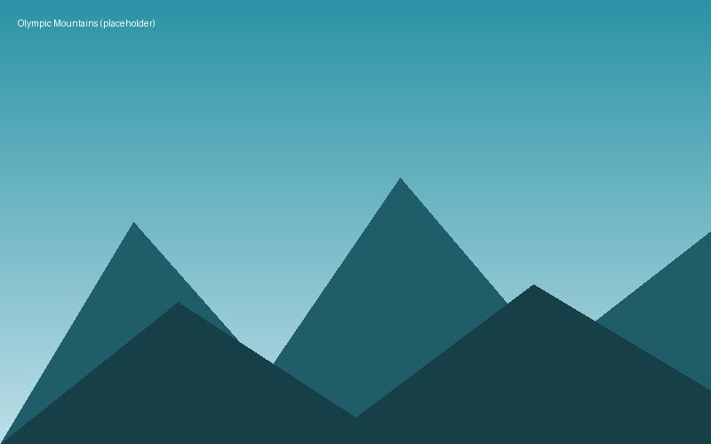

The Olympic Mountains
Hiking and Camping Resources
The Olympic Mountains are a mountain range on the Olympic Peninsula of the Pacific Northwest of the United States. The mountains, part of the Pacific Coast Ranges, are not especially high – Mount Olympus is the highest summit at 7,980 ft (2,432 m); however, the eastern slopes rise precipitously out of Puget Sound from sea level, and the western slopes are separated from the Pacific Ocean by the low-lying 20 to 35 km (12 to 22 mi) wide coastal plain. These densely forested western slopes are the wettest place in the 48 contiguous states. Most of the mountains are protected within the bounds of Olympic National Park and adjoining segments of the Olympic National Forest.
The mountains are located in western Washington in the United States, spread out across four counties: Clallam, Grays Harbor, Jefferson and Mason. Physiographically, they are a section of the larger Pacific Border province, which is in turn a part of the larger Pacific Mountain System.
Geography

The Olympics have the form of a domed cluster of steep-sided peaks surrounded by heavily forested foothills and incised by deep valleys. They are surrounded by water on three sides, separated from the Pacific by the 20 to 35 km (12 to 22 mi) wide coastal plain. The general form of the range is more or less circular, or somewhat horseshoe-shaped, and the drainage pattern is radial.
Climate
Precipitation varies greatly throughout the range, from the wet western slopes to the semi-arid eastern ridges. Mount Olympus, nearly 8,000 feet (2,400 m) tall, is a mere 35 miles (56 km) from the Pacific Ocean, one of the steepest reliefs globally and accounting for the high precipitation of the area, with an estimated 240 inches (6,100 mm) of snow and rain on Mount Olympus. 140 to 170 inches (3,600 to 4,300 mm) of rain falls on the Hoh Rainforest annually, receiving the most measured precipitation of anywhere in the contiguous United States. Areas to the northeast of the mountains are located in a rain shadow cast by the mountains themselves, and receive as little as 16 in (410 mm) of precipitation around the city of Sequim.
Annual precipitation increases to about 30 in (760 mm) on the edges of the rain shadow around Port Townsend, the San Juan Islands, and the city of Everett across Puget Sound. 80% of precipitation falls during the winter months. On the coastal plain, the winter temperature stays between −2 and 7 °C (28 and 45 °F). During the summer it warms up to between 10 and 24 °C (50 and 75 °F), with occasional hot spell days reaching to the upper 80s to low 90s F (30° – 35° C).
The large number of snowfields and glaciers, reaching down to 1,500 m (5,000 ft) above sea level, are a consequence of the high precipitation, northern latitude, and cool moderating climate adjacent to the Pacific Ocean. There are about 184 glaciers and permanent ice fields crowning the Olympics peaks. The most prominent glaciers are those on Mount Olympus covering approximately 10 square miles (26 km²). Beyond the Olympic complex are the glaciers of Mount Carrie and others in the Bailey Range, Mount Christie, Mount Queets, and Mount Anderson, however most of these have experienced significant decrease in both length and mass in recent decades, with several disappearing completely in the driest northeastern portion of the mountains.
Geology
The Olympics are made up of obducted clastic wedge material and oceanic crust. They are primarily Eocene sandstones, turbidites, and basaltic oceanic crust. Unlike the Cascades, the Olympic Mountains are not volcanic, and contain no native granite.
Millions of years ago, vents and fissures opened under the Pacific Ocean and lava flowed forth, creating huge underwater volcanic mountains and ranges called seamounts. The Farallon tectonic plate that formed a part of the Pacific Ocean floor inched eastward toward North America about 35 million years ago and most of the sea floor subducted beneath the continental land mass of the North America plate. Some of the sea floor, however, was scraped off and jammed against the mainland, creating the dome that was the forerunner of today's Olympics. This is thought to be the origin of the curved shape of the Olympic Basaltic Horseshoe, an arc of submarine basalt running east along the Strait of Juan de Fuca, south along Hood Canal, and then west to Lake Quinault. All this occurred under water; the Olympics began to rise above the sea only 10–20 million years ago.
The Olympics were shaped in the Pleistocene era by both alpine and continental glaciers advancing and retreating multiple times. The valleys of the Hoh, Queets, and Quinault rivers are typical U-shaped valleys carved by advancing alpine glaciers. During the glaciations, the vast continental Cordilleran Ice Sheet descended from Alaska south through British Columbia to the Olympics. The ice split into the Juan de Fuca and Puget ice lobes as they encountered the resistant Olympic Mountains, carving out the current waterways and advancing as far south as present-day Olympia.
Rivers
Rivers radiate outwards to all sides. Clockwise from windward to leeward, the major watersheds are: Satsop, Wynoochee, Humptulips, Quinault, Queets, Hoh, Bogachiel, Sol Duc (all flowing west into the Pacific Ocean); Lyre, Elwha, Dungeness (all flowing north into the Strait of Juan de Fuca); Big Quilcene, Dosewallips, Duckabush, Hamma Hamma, and Skokomish (all flowing east into Hood Canal).
Protected Areas
A large portion of the range is contained within the Olympic National Park. Of this portion, 95% is part of the Daniel J. Evans Wilderness. The national park is surrounded on the south, east, and northwest sides by the Olympic National Forest, with five wilderness areas, and on the southwest side by the Clearwater State Forest with one Natural Area Preserve, and the Quinault Indian Reservation. State parks and wildlife areas occur in the lower elevations.